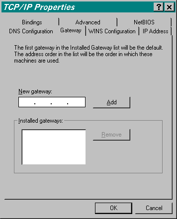
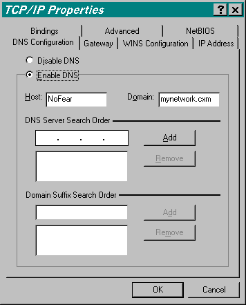

![[ Table of Contents ]](../gx/indexnew.gif)
![[ Front Page ]](../gx/homenew.gif)
![[ Linux Gazette FAQ ]](./../gx/dennis/faq.gif)
Tired of lugging that laptop from the office to home only to find that once you get there you have to boot your M$ operating system, change your network settings to work with your home network, and then ... ah-hem REBOOT?! I was! [Enter DHCP from stage left.] If your office and home environments are configured correctly, DHCP is about to be your new best friend!
Disclaimer: This article provides information we have gleamed from reading the books, the HOWTOs, man pages, usenet news groups, and countless hours banging on the keyboard. It is not meant to be an all inclusive exhaustive study on the topic, but rather, a stepping stone from the novice to the intermediate user. All the examples are taken directly from our home networks so we know they work.
How to use this guide:
DHCP@Home, why? Convenience. I was fed up with changing network configurations when I came home and then subsequently went back to the office. It was completely unacceptable to add a bolt-on utility to manage these settings for me. Then one day it hit me. We use DHCP at work. Why shouldn't I use it at home! It'll give me an IP address on the local network, the necessary DNS information, and the correct gateway.
DHCP@Work, why? This one is a little easier to justify than simply being inconvenienced. I worked at a facility with ~600 workstations. On the 1st day with the company I had to setup my own machine and get it on the network. It took nearly 30-minutes for an ill-equiped network administrator, I'll leave his name out of this article since he's still providing network services for a local company, to find an empty IP address that I could statically assign to my system. He had paper print outs of 3-complete Class-C networks (192.168.[1-3].[1-254]). It doesn't take higher math to figure out that there's over 750 addresses available. 255 of which were on the network segment I was on.
His process:
1. Find an open slot on the printed copyThat was Friday. Monday morning I had an IP Conflict. Real accurate system. All I knew about DHCP was that I had to select it to get an IP address from my ISP at home. I had no idea how it worked nor if we could use it to fix this `problem'. I joined forces with a different network services group in the company, they educated me, and we did a full frontal assault on every machine. DHCP is running to this day ...
2. Verify it was open in his electronic copy
3. Ping the address to verify no one was on it
4. Give it to me, write it on the paper and enter it electronically
IP Numbering Schemes: If you've decided to run DHCP at home then be smart about it. Figure out a numbering scheme and stick with it. You'll know exactly what's on your network just by seeing the IP address. This advice holds more weight in the corporate world where you're likely to be hosting more machines. Anyway, this is what I use at home and it closely resembles work as well:
IP Address Range Hosts
* Important machines and network equipment *
.001
Your router (if present)
.002 - .009 Network
equipment (switches and hubs)
.010 - .075 Servers
.076 - .099 Network
Printers
* User workstations *
.100 - .254 DHCP
range
Sticking with a scheme like the one above will make visual scans of your logs much easier since you'll likely notice an oddball IP address doing something it's not supposed to or not capable of, i.e., a printer trying to telnet into your machine? Not likely ... and a good indicator that you didn't read last month's article on security!
Are you ready? Type the following command at a shell prompt:
whereis dhcpd[Enter]You should see output similar to the following line. If not, then you still need to install DHCP. Get to it and come back here:
dhcpd: /usr/sbin/dhcpd /etc/dhcpd.conf /etc/dhcpd.leases /etc/dhcpd.leases~
/etc/dhcpd.conf: This is where we start. This file
is the key to it all and it's extremely simple in design. Here's
what mine looks like:
/etc/dhcpd.conf |
| September 18, 1999 |
| Author: Bill Mote |
| default-lease-time 36000;
max-lease-time 7200; option subnet-mask 255.255.255.0; option broadcast-address 192.168.1.255; option routers 192.168.1.10; option domain-name-servers 192.168.1.10; option domain-name "mynetwork.cxm"; subnet 192.168.1.0 netmask 255.255.255.0 {
|
/etc/dhcpd.leases: We now need to give the dhcp server somewhere to start. We do so by creating an empty leases file. Type the following command at a shell prompt:
touch /etc/dhcpd.leases[Enter]Below is a `live' dhcpd.leases file from my system. Please note that your file will be empty until a DHCP client successfully obtains an IP address from your server.
/etc/dhcpd.leases |
| September 18, 1999 |
| Author: {auto generated by dhcpd} |
| lease 192.168.1.100 {
starts 6 1999/09/18 17:27:36; ends 6 1999/09/18 17:37:36; hardware ethernet 00:60:08:e3:60:03; uid 01:00:60:08:e3:60:03; client-hostname "NoFear"; } |
Let's go already! It's what you've been waiting for. Time to startup the dhcp server and get a client running. Type the following command at a shell prompt:
/usr/sbin/dhcpd[Enter]That's it for the server side. Now onto client configuration.
M$ client: For the purposes of this article I'm going to assume that you've got mostly M$ machines connected to a linux server.
The Microsoft client is actually very easy to configure. Follow
these mouse clicks:
Start -> Settings -> Control Panel -> NetworkFind the `TCP/IP protocol for your network adapter'. Highlight it get to the properties window by pressing [Mouse1] on the `Properties' button. Since pictures are better than words I'll use the following 3 pictures to illustrate how your TCP/IP settings should be configured:



After a quick M$ reboot you should be golden! For more info on
DHCP see the DHCP-minihow-to.
Notice in the opening sentence of this paragraph the word, "should".
Well, here's what I've found.
DHCP and Win98 SE (second edition) -- [Bill steps onto his soap box] Nothing like a little competition to spark the boys in Redmond, eh? The impression was the *everyone* was setting up Linux boxes to share their internet connections at home. Microsoft responds in short order with Internet Connection Sharing included in Win98 SE. Quite frankly, I loved it. I used it to get our church computers running from a single dial connection and it's working great.However, Win98 SE's ICS seems to be doing something a little off the wall when it comes to DHCP. My Win98 SE machine at home assigns an IP address to my NIC if it can't find a DHCP server. In the old days Win9x would use it's last known IP address as long as the lease hadn't expired ... not any more.
If you have problems getting your Win98 SE box to get an IP address then you may want to assign it a permanent address. What about the numbering scheme you ask? You `could' set a small range aside at the bottom or top of the range, but still above our default .100 (like .100 - .105).
If you still want the box to have an IP address assigned by DHCP then you can do the following:
Ridiculous? Yes. I just haven't looked for a way to permanently fix the problem. There's probably some undocumented Win9x registry tweak ... If anyone knows send it to my e-mail address below please!
- Give the Win98 SE box an IP address on your network. Don't worry it'll just be temporary.
- Wait a couple of days (haven't narrowed the time down yet)
- Set the machine back to DHCP